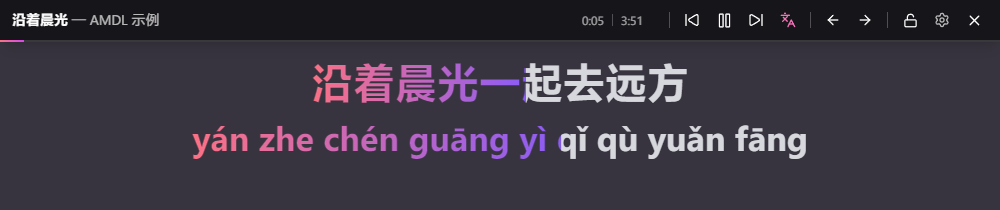

跟得上每一个字
支持 TTML 逐字与逐行、LRC 歌词，以及新版 Apple Music 的逐字缓存。逐字高亮按词推进，重叠和声也能分别跟随。
01 / 歌词呈现APPLE MUSIC DESKTOP LYRICS
为 Windows 版 Apple Music 补上一层真正贴合桌面的歌词。逐字跟唱、翻译与注音、多渠道匹配，外观也由你决定。

真实软件界面 · 点击放大
音乐，值得更好的呈现
从识别正在播放的歌曲，到选对歌词，再到每一行的节奏，AMDL 把这些细节连接起来。
支持 TTML 逐字与逐行、LRC 歌词，以及新版 Apple Music 的逐字缓存。逐字高亮按词推进，重叠和声也能分别跟随。
01 / 歌词呈现平滑的进度推进、长间奏提示与尾奏定格，让歌词在切换时保持连贯。时间偏移还可按歌曲体验调整。
02 / 播放体验拖动、缩放、锁定歌词面板；悬停即可解锁。可保持置顶，也能一键重置面板位置。
03 / 桌面交互官方提供的翻译与注音，直接跟随主句显示。设置默认偏好，从控制条随时开关；手动选择会保留到本次运行结束。

译文紧跟对应主句，折行或多句同时出现时也能一一对应。歌词池会一并保存可用的翻译与注音。

有逐字时间的注音会连续高亮，整行显示保持阅读流畅。翻译和注音均可独立开关。

自动识别与手动挑选相配合。遇到同名歌曲或不同版本时，先预览，再决定是否加入手动匹配池。

按歌曲信息搜索候选歌词，试听时可先预览；确认后立即应用，或加入手动匹配池供以后使用。

缓存池保存近期歌词；手动匹配池留住你确认的版本。查看歌曲信息、删除记录，或管理自己添加的歌词。
各渠道可按需要启用与排序。在线搜索与缓存相互佐证，提高歌曲匹配成功率；失败重试次数也可自行设置。
通过官方接口读取歌词。配置 Token 后可获取可用曲目的逐字或逐行歌词，以及官方提供的翻译与注音。
获取 Token 教程读取 Apple Music 客户端缓存中的逐字、逐行歌词与辅助内容，兼容新旧版缓存，并辅助确认曲目。
提供额外的在线歌词来源，并支持在匹配界面搜索与预览候选结果。
把你亲自确认的歌词保存下来，再播放同一首歌时可优先使用。
获取适用于 Windows 10 / 11 x64 的 AMDL 安装包。
在 Windows 客户端播放歌曲，AMDL 会读取正在播放的歌曲信息。
按喜好设置歌词渠道、外观、位置和面板交互。
不一定。Token 用于 Apple Music 官方 API 歌词渠道；你仍可使用其他已启用的歌词渠道。如果希望获取官方接口提供的逐字歌词，请按 Token 教程完成配置。
显示形式取决于实际获取到的歌词内容。有逐字时间标签的 TTML 可逐字高亮；只有逐行时间信息的 TTML 或 LRC 会逐行高亮。
获取到包含翻译或注音的歌词时，控制条会显示翻译图标。点击即可切换；两种内容都有时可在菜单中分别开关，两项均手动开启时优先显示翻译。默认偏好可在“通用”设置中调整；辅助内容是否可用取决于官方提供的数据。
打开歌词匹配界面查看候选歌词，预览后选择正确版本，并加入手动匹配池。之后也可以在歌词池管理中查看或更改自己的记录。
把鼠标移到歌词面板顶部可显示解锁按钮；也可通过系统托盘菜单解锁或重置歌词面板位置。